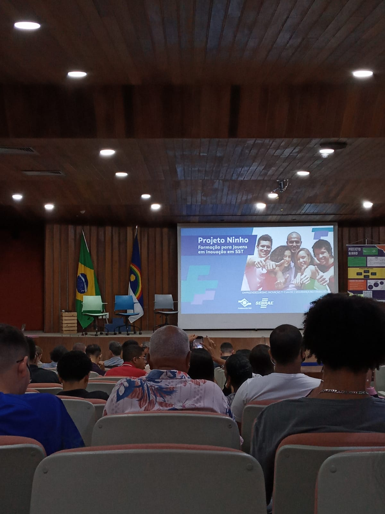

Momentos de um Agente de Inovação e Programador



Assinatura
Visita ao Porto
Link da página 03
Link da página 04
Estudante de Informática para Internet, no Instituto Federal de Pernambuco, Campus - Jaboatão dos Guararapes.
Agente de Inovação na Fundacentro (Fundação Jorge Duprat Figueiredo de Segurança e Medicina do
Trabalho) e SEBRAE-PE.